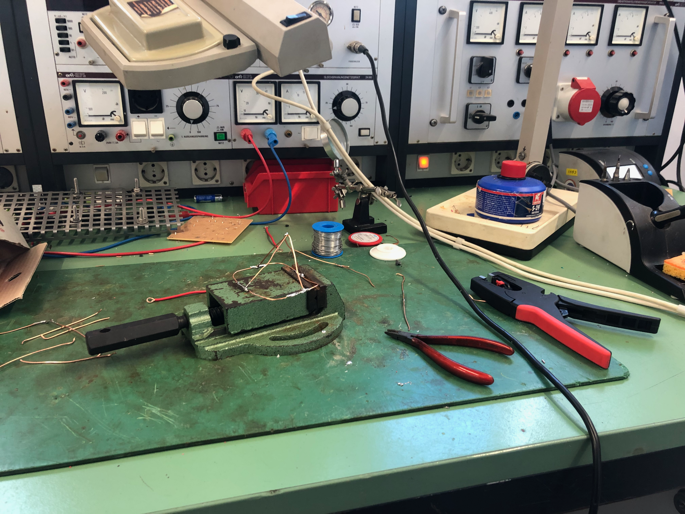
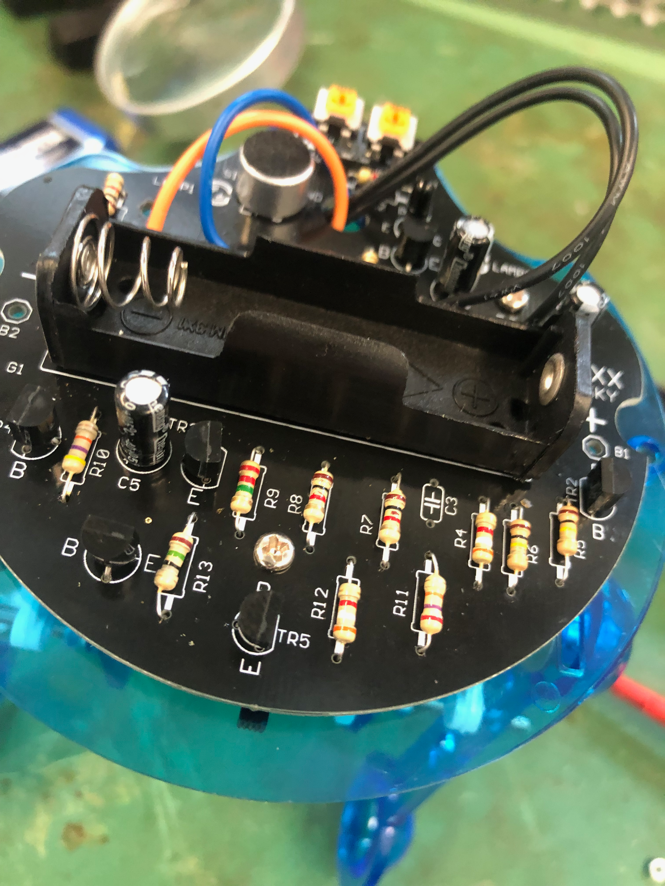
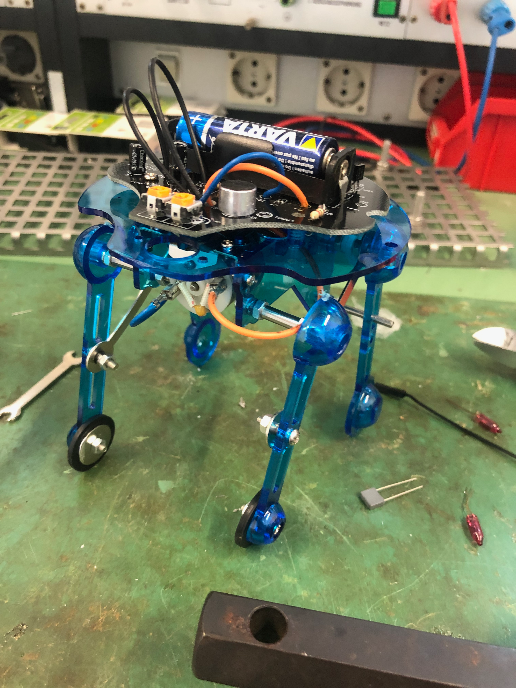

B-Braun-Praktikum
Ein zwei wöchiges Praktikum beim Pharmaunternehemn B Braun Melsungen AG in der Werkstatt.
A two-week internship at the pharmaceutical company B Braun Melsungen AG in the workshop.
Una pasantía de dos semanas en la empresa farmacéutica B Braun Melsungen AG en el taller.
Un stage de deux semaines dans l'atelier de la société pharmaceutique B Braun Melsungen AG.
- Löten
- Fräsen
- Python3
- Elektronik
- Mechatronik
Anlass
Um einen Einblick in die Arbeitswelt zu gewinnen und die eigenen Interessen weiterzuverfolgen, war in der Schule ein zweiwöchiges Praktikum verpflichtend vorgeschrieben.
Mein Praktikum absolvierte ich bei der B. Braun Melsungen AG, einem Pharmaunternehmen, das vor Ort medizinische Stoffe herstellt.
Aufgaben
Während meines Praktikums arbeitete ich an mehreren kleineren Projekten, unter anderem an Robotern und ferngesteuerten Autos.
Des Weiteren durfte ich mit größeren Maschinen arbeiten, etwa einer Fräse.
Learnings
Das Praktikum bot mir einen Einblick in das Arbeiten mit kleineren und größeren Maschinen und gab mir einen guten Einstieg in die Elektrotechnik und Mechatronik.
Purpose
In order to gain an insight into the world of work and to pursue one's own interests, a two-week internship was mandatory at school.
I completed my internship at B. Braun Melsungen AG, a pharmaceutical company that produces medical substances on site.
Assignments
During my internship, I worked on several smaller projects, including robots and remote-controlled cars.
Furthermore, I was allowed to work with larger machines, such as a milling machine.
What I learned:
The internship offered me an insight into working with smaller and larger machines and gave me a good introduction to electrical engineering and mechatronics.
Ocasión
Con el fin de obtener una visión del mundo laboral y perseguir sus propios intereses, se hizo obligatoria una pasantía de dos semanas en la escuela.
Realicé mis prácticas en B. Braun Melsungen AG, una empresa farmacéutica que produce sustancias medicinales in situ.
Tareas
Durante mi pasantía, trabajé en varios proyectos más pequeños, incluidos robots y autos controlados a distancia.
Además, pude trabajar con máquinas más grandes, como una fresadora.
Aprendizaje
La pasantía me dio una idea de cómo trabajar con máquinas más pequeñas y más grandes y me dio una buena introducción a la ingeniería eléctrica y la mecatrónica.
À l'occasion de
Afin d'avoir un aperçu du monde du travail et de poursuivre ses propres intérêts, un stage de deux semaines était obligatoire à l'école.
J'ai effectué mon stage chez B. Braun Melsungen AG, une entreprise pharmaceutique qui fabrique des substances médicales sur place.
Tâches
Pendant mon stage, j'ai travaillé sur plusieurs petits projets, dont des robots et des voitures télécommandées.
En outre, j'ai été autorisé à travailler avec des machines plus grandes, comme une fraiseuse.
Apprentissages
Le stage m'a donné un aperçu du travail avec des machines plus petites et plus grandes et m'a donné une bonne introduction à l'électrotechnique et à la mécatronique.
Bilder


